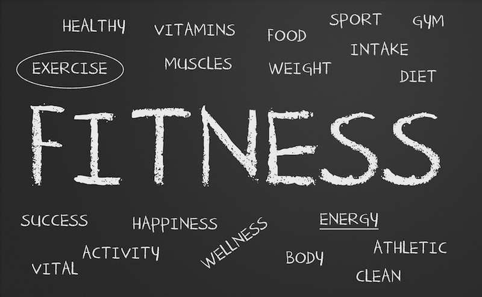

WHAT IS FITNESS ?
"Fitness" is a broad term that means something different to each person, but it refers to your own optimal
health and overall well-being. Being fit not only means physical health, but emotional and mental
health, too. It defines every aspect of your health. Smart eating and active living are fundamental to
fitness.
According to the Academy of Nutrition and Dietetics' Complete Food and Nutrition Guide (3rd ed.),
when you are fit, you have:
- Energy to do what's important to you and to be more productive
- Stamina and a positive outlook to handle the mental challenges and emotional ups and downs of
everyday life and to deal with stress
- Reduced risk for many health problems, such as heart disease, cancer, diabetes and osteoporosis
- The chance to look and feel your best
- Physical strength and endurance to accomplish physical challenges
- A better chance for a higher quality of life and perhaps a longer life, too
Mental health

Studies have shown that physical activity can improve mental health and well-being. This improvement is due
to an increase in blood flow to the brain, allowing for the release of hormones as well as a decrease
stress hormones in the body (e.g., cortisol, adrenaline) while also stimulating the human body's mood
boosters and natural painkillers. Not only does exercise release these feel-good hormones, it can also
help relieve stress and help build confidence.The same way exercising can help humans to have a
healthier life, it also can improve sleep quality. Based on studies, even 10 minutes of exercise per day
can help insomnia.These trends improve as physical activity is performed on a consistent basis, which
makes exercise effective in relieving symptoms of depression and anxiety, positively impacting mental
health and bringing about several other benefits. For example:
- Physical activity has been linked to the alleviation of depression and anxiety symptoms.
- In patients with schizophrenia, physical fitness has been shown to improve their quality of life and
decrease the effects of schizophrenia.
- Being fit can improve one's self-esteem.
- Working out can improve one's mental alertness and it can reduce fatigue.
- Increased opportunity for social interaction, allowing for improved social skills
To achieve some of these benefits, the Centers for Disease Control and Prevention suggests at least
30 or 60 minutes of exercise 3-5 times a week.
- Different forms of exercise have been proven to improve mental health and reduce the risk of
depression, anxiety, and suicide.
- Benefits of Exercise on Mental health include ... Improved sleep, Stress relief, Improvement in
mood, Increased energy and stamina, Reduced tiredness that can increase mental alertness. There
are beneficial effects for mental health as well as physical health when it comes to exercise.
5 Great Benefits of Playing Sport
- A Strong Heart
Your heart is a muscle and needs frequent exercise to help it keep fit and healthy. A healthy heart
can pump blood efficiently around your body. Your heart will improve in performance when it is
regularly challenged with exercise. Stronger hearts can improve overall health of the body.
- Improved Lung Function
Regular sport causes more oxygen to be drawn into the body with carbon monoxide and waste gases
expelled. This increases the lung capacity during sport, improving lung function and efficiency.
- Social Benefits of Sport
As well as the physical and mental benefits, sport also offers some incredible social benefits too.
Taking part in group sports can improve relationships between players and helps individuals to
improve their teamwork, communication and problem-solving skills.
Organised sport also helps to improve discipline and can boost self-motivation too, by making us
feel like we are part of a collective and that we are contributing towards that.
- Helps regulate eating

- proteins
Proteins give your body amino acids — the building blocks that help your body's cells do all of their
everyday activities. Proteins help your body build new cells, repair old cells, create hormones
and enzymes, and keep your immune system healthy. If you don't have enough protein, your body
takes longer to recover from illness and you're more likely to get sick in the first place.
- Carbohydrates
Carbohydrates give you quick energy — they quickly go into your blood as glucose (blood sugar), which
your body uses for fuel first, before turning the leftovers into fat.
Fruits, vegetables, bread, pasta, grains, cereal products, crackers, dried beans, peas, and
lentils are all good sources of carbohydrates. Many of them are also good sources of fiber,
which your digestive system needs to stay healthy.
- Vitamins and minerals
Vitamins keep your bones strong, your vision clear and sharp, and your skin, nails, and hair healthy
and glowing. Vitamins also help your body use energy from the food you eat.
Minerals are chemical elements that help regulate your body's processes. Potassium, for example,
helps your nerves and muscles function. Calcium helps your teeth and bones stay strong. Iron
carries oxygen to your cells.
- Water
Water is necessary for life, which makes it vital for good health. Water makes up about 50% to 66% of
your total body weight. It regulates your temperature, moves nutrients through your body, and
gets rid of waste. Breast cancer treatment can sometimes cause diarrhea or vomiting. Losing a
lot of fluids plus the chemicals and minerals they contain can lead to dehydration.